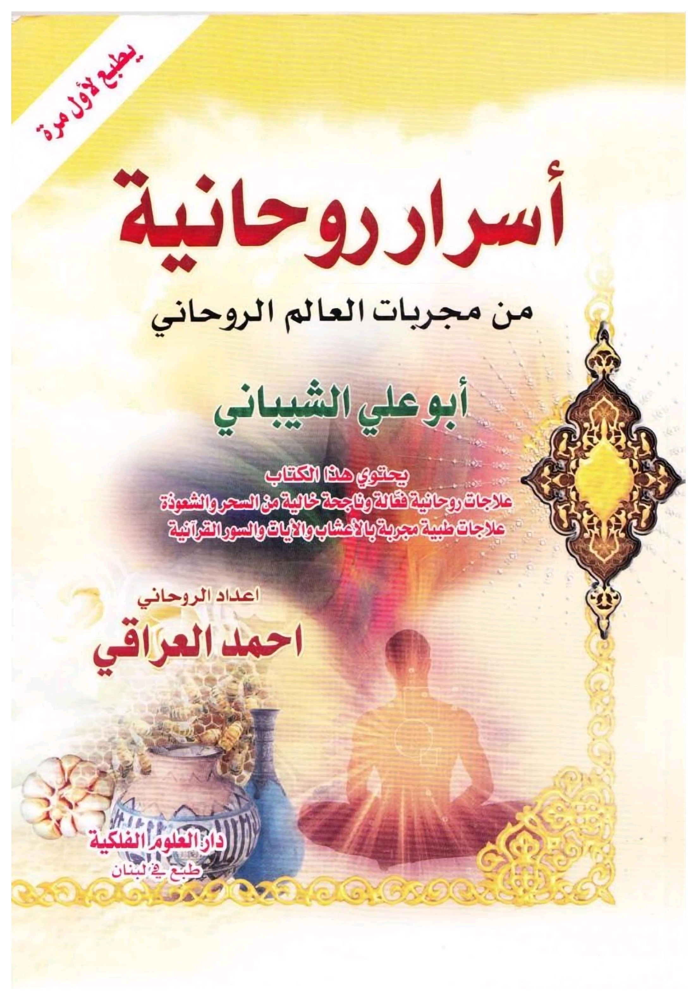
أسرار روحانية
Asrār Rūḥāniyyah
من مجربات العالم الروحاني
Min Mujarrabāt al-ʿĀlim al-Rūḥānī
Panel transkripsi yang menyelaraskan tampilan dengan sampul: dasar krem gading, aksen emas, judul marun, dan blok Arab hijau. Isi naskah tetap dibedakan jelas dari transliterasi dan terjemahan.
Halaman 8 (folio pindai 7) — pembuka isi setelah sampul
① Matan Arab bertashkil
النَّصُّ الْعَرَبِيُّتَكْتُبُ هٰذَا الطِّلَسْمَ بِقَلَمٍ أَسْوَدَ عَلَى قِطْعَةِ قُمَاشٍ بَيْضَاءَ مِنْ مَلَابِسِ الشَّخْصِ الْمُصَابِ، وَتُحْرَقُ هٰذِهِ الْقِطْعَةُ كَيْ يَتَبَخَّرَ بِهَا.
تَوَكَّلُوا يَا خُدَّامَ هٰذَا الطِّلَسْمِ، وَانْزِلُوا هٰذَا الْعَارِضَ فِي جَسَدِ فُلَانِ بْنِ فُلَانَةَ. أُقْسِمُ عَلَيْكُمْ بِحَقِّ الْمَلِكِ الْأَعْظَمِ الْمُسَيْطِرِ عَلَيْكُمْ.
② Baca washal & terjemahan
LATIN · MAKNATawakkalū yā khuddāma hādhāṭ-ṭilasmi, wan-zilū hādhā al-ʿāriḍa fī jasadi fulānin ibni fulānah. Uqsimu ʿalaykum biḥaqqi al-maliki al-aʿẓami al-musayṭiri ʿalaykum.
Contoh susunan panel — halaman cetak 9
① Matan Arab bertashkil
النَّصُّ الْعَرَبِيُّتُكْتَبُ عَلَى قَالَبٍ مِنَ الثَّلْجِ بِقَلَمٍ بِدُونِ حِبْرٍ الْآتِي:
«سَلَامٌ قَوْلًا مِنْ رَبٍّ رَحِيمٍ، سَلَامٌ عَلَى آلِ يَاسِينَ» تِسْعَ مَرَّاتٍ،
«يَا نَارُ كُونِي بَرْدًا وَسَلَامًا»، وَ«أَلْقَيْتُ عَلَيْكَ مَحَبَّةً مِنِّي».
② Panduan baca Latin
WAṢL & ASSIMILASITuktabu ʿalā qālibin minath-thalji biqalamin bidūni ḥibrin al-āti:
“Salāmun qaulan mir-rabbin raḥīm, salāmun ʿalā āli Yāsīn” tisʿa marrātin.
③ Terjemahan matan
BAHASA INDONESIATulislah pada sebongkah es dengan pena tanpa tinta bacaan berikut: “Salam sejahtera, sebagai perkataan dari Tuhan Yang Maha Penyayang; salam sejahtera atas keluarga Yasin,” sembilan kali; “Wahai api, jadilah dingin dan membawa keselamatan,” serta “Aku telah melimpahkan kepadamu kasih sayang dari-Ku.”
④ Catatan filologi dan verifikasi
TAḤQĪQArah visual yang diterapkan
Emas dan gading untuk bingkai, latar, dan pemisah—mengambil nuansa dasar sampul.
Marun untuk judul dan tombol utama—mengambil warna judul sampul.
Hijau sebagai penanda blok teks Arab, terinspirasi warna nama penyusun pada sampul.
Halaman cetak 11–13 — sampel lanjutan
Halaman 11 · حِجَابٌ لِلْإِنْجَابِ
النَّصُّ · تَرْجَمَةٌ﴿إِنَّ اللهَ لَا يُخْلِفُ الْمِيعَادَ﴾
Halaman 12 · الْغِنَى / لِقَضَاءِ الدَّيْنِ
ARAB · WASḤAL«يَا غَنِيُّ» (١٠٠٠) مَرَّةً.
«يَا حَيُّ يَا قَيُّومُ» (١٠٠٠) مَرَّةً.
«أَنَا مَلِكُ الْمُلُوكِ، وَبِيَدِي مُلْكُ كُلِّ مَلِكٍ، لِيَ الْمِيرَاثُ، فَاطْلُبْنِي تَجِدْنِي».
Halaman 13 · طِلَاسِمُ لِطَرْدِ أُمِّ الصِّبْيَانِ
TRANSKRIPSI DIPERIKSABuka transkripsi lengkap halaman 11–13 — mencakup teks ayat, transliterasi washal, terjemahan, dan catatan kolasi.
Halaman 14 · pindai tidak tersedia
GAPFolio 14 tidak ditemukan; teksnya tidak direka.
Status hlm. 14Status kolasi lengkap
# Halaman cetak 14 — pindai tidak tersedia ## Status kolasi Folio 14 tidak ditemukan sebagai pindai tersendiri dalam himpunan gambar yang diperiksa; urutan folio melompat dari 13 ke 15. Karena bukti visual halaman ini tidak tersedia, transkripsi Arab bertashkīl, transliterasi waṣl, dan terjemahan tidak dibuat agar teks tidak direka. **Keterangan:** `[pindai halaman 14 tidak tersedia dalam kumpulan gambar]`. Ini adalah gap pada kumpulan pindai, bukan bukti bahwa halaman 14 kosong atau tidak terdapat dalam kitab.
Halaman cetak 15–18 — sampel lanjutan
Halaman 15 · لِإِبْطَالِ السِّحْرِ وَالْعَمَلِ
ARAB · MAKNAHalaman 16 · عِلَاجُ الْعُقْمِ وَانْسِدَادِ قَنَوَاتِ الرَّحِمِ
ARAB · CATATANHalaman 17–18 · حِجَابٌ لِلتَّابِعَةِ وَالْأَحْلَامِ الْمُزْعِجَةِ
TEKS · KOLASIاللَّهُمَّ صَلِّ عَلَى مُحَمَّدٍ وَآلِ مُحَمَّدٍ بِعَدَدِ قَطَرَاتِ الْمَطَرِ (١٠٠٠) مَرَّةً.
Halaman cetak 19–22 — sampel dan kolasi
Halaman 19 · صَلَوَاتٌ وَبَخُورٌ
TEKS · TRANSKRIPSI«اللَّهُمَّ صَلِّ عَلَى مُحَمَّدٍ وَآلِ مُحَمَّدٍ بِعَدَدِ النُّجُومِ، مَا بَرَزَ وَمَا انْدَثَرَ» (١٠٠٠) مَرَّةً.
«اللَّهُمَّ صَلِّ عَلَى مُحَمَّدٍ وَآلِ مُحَمَّدٍ بِعَدَدِ وَرَقَاتِ الشَّجَرِ» (١٠٠٠) مَرَّةً.
«اللَّهُمَّ صَلِّ عَلَى مُحَمَّدٍ وَآلِ مُحَمَّدٍ بِعَدَدِ قَطَرَاتِ النَّدَى» (١٠٠٠) مَرَّةً.
Halaman 20 · تَرْكِيبٌ وَعِلَاجٌ
21 يَوْمًاعِلَاجُ الْقَانُونِ [كَذَا فِي الْمَطْبُوعِ؛ الْمُصْطَلَحُ غَيْرُ مُتَحَقَّقٍ]
Halaman 21 · Rajah/tulisan tangan
REPRODUKSI PINDAI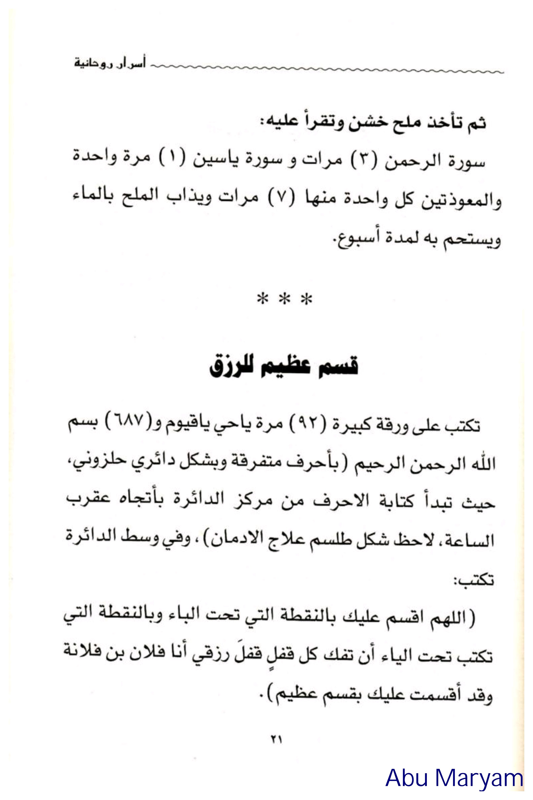
Transkripsi lengkap hlm. 21Halaman 22 · Wafaq/rajah
REPRODUKSI PINDAI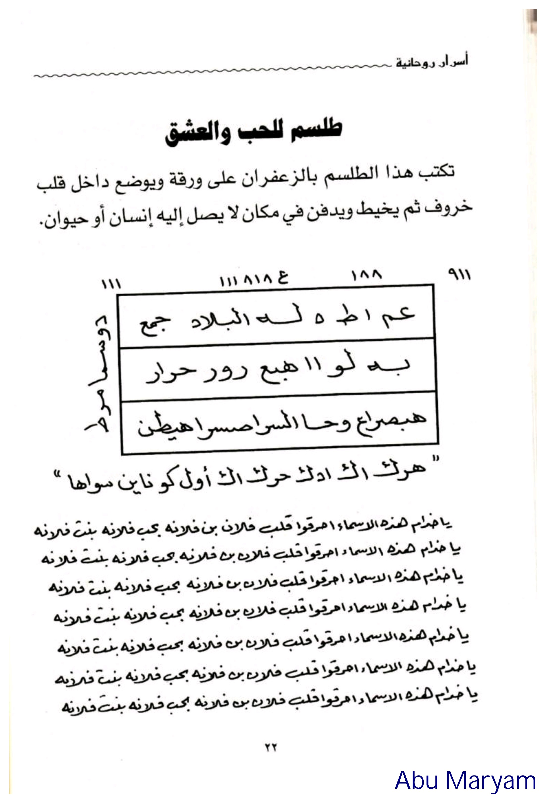
Transkripsi lengkap hlm. 22Halaman cetak 23–24 — sampel lanjutan
① Matan Arab bertashkil · halaman 23
النَّصُّ الْعَرَبِيُّ«يَا وَلِيَّ كُلِّ ضَعِيفٍ، إِلٰهِي، قَدْ أَتَيْتُكَ وَلَمْ أَجِدْ أَضْعَفَ مِنِّي، إِلٰهِي قَوِّنِي».
② Cara baca & terjemahan · halaman 23
WAṢL + TERJEMAH③ Doa bertashkil · halaman 24
النَّصُّ الْعَرَبِيُّ«اللَّهُمَّ أَسْأَلُكَ بِاسْمِكَ الَّذِي يُغَيِّرُ الْأَشْيَاءَ» (١٠٠٠) مَرَّةً.
«اللَّهُمَّ أَسْأَلُكَ بِقُدْرَتِكَ الَّتِي تُغَيِّرُ الْأَشْيَاءَ» (١٠٠٠) مَرَّةً.
«اللَّهُمَّ أَسْأَلُكَ بِاسْمِكَ الَّذِي تَقُولُ بِهِ لِلْأَشْيَاءِ: كُنْ، فَيَكُونُ» (١٠٠٠) مَرَّةً، «أَنْ تُغَيِّرَ سُوءَ حَالِي بِحُسْنِ حَالِكَ».
Transkripsi lanjutan: berkas TRANSKRIPSI_ASRAR_RUHANIYYAH_HAL23-24.md memuat teks dan catatan yang lebih lengkap untuk halaman ini. Sampel panel tidak menggantikan kolasi seluruh naskah.
Halaman cetak 25 — sampel lanjutan
Halaman 25 · لِعِلَاجِ التَّعَبِ وَالشِّفَاءِ
مَتْنٌ · تَنْبِيهٌHalaman cetak 26–28 — sampel lanjutan
Halaman 26 · طِلَسْمٌ لِلْمَحَبَّةِ
RAJAH · KOLASIيَا وَدُودُ، أَسْأَلُكَ أَنْ تَجْعَلَ الْوُدَّ وَالْحُبَّ فِي قَلْبِ (فُلَانِ بْنِ فُلَانَةَ) عَلَى (فُلَانَةَ بِنْتِ فُلَانَةَ).
Halaman 27 · قَضَاءُ الْحَاجَةِ وَقِرَاءَةُ الْمَاءِ
ARAB · CATATANفِي الْيَوْمِ الْخَامِسِ تُقْرَأُ عَلَيْهِ سُورَةُ «أَلَمْ نَشْرَحْ لَكَ صَدْرَكَ».
Halaman 28 · تَتِمَّةُ الْقِرَاءَةِ وَالْبَخُورِ
متابعةبُخُورٌ لِمَنْعِ الْمَسِّ مِنَ الْجِنِّ وَالشَّيْطَانِ
Halaman cetak 29–32 — sampel lanjutan
Halaman 29 · لِلرِّزْقِ
نَصٌّ · تَرْجَمَةٌHalaman 30 · وَفْقٌ خَطِّيٌّ
PINDAI SUMBER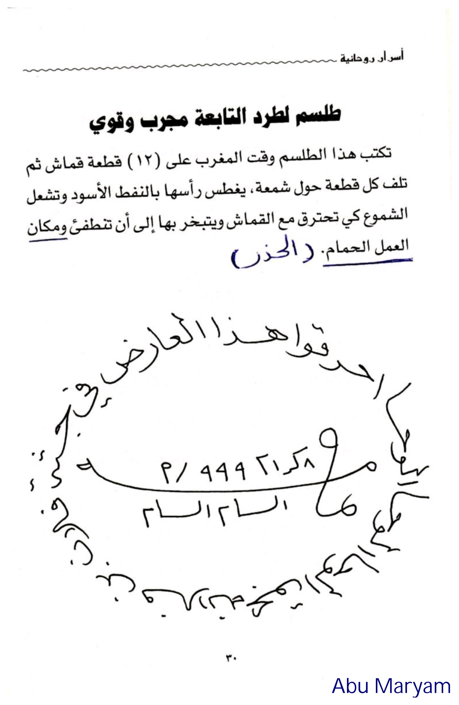
Transkripsi lengkap hlm. 30Halaman 31 · وصفاتٌ تاريخية
تَنْبِيهُ السَّلَامَةِHalaman 32 · إِبْطَالُ السِّحْرِ
سَطْرٌ سَامٍHalaman cetak 33 — sampel
مُعَالَجَةُ الْعُقْمِ · halaman 33
KOLASI · PERINGATANHalaman cetak 34 — rajah bertulis tangan
طِلَسْمٌ لِعَدَمِ النَّوْمِ عِنْدَ الْأَطْفَالِ
FACSIMILE · NOTA KESELAMATAN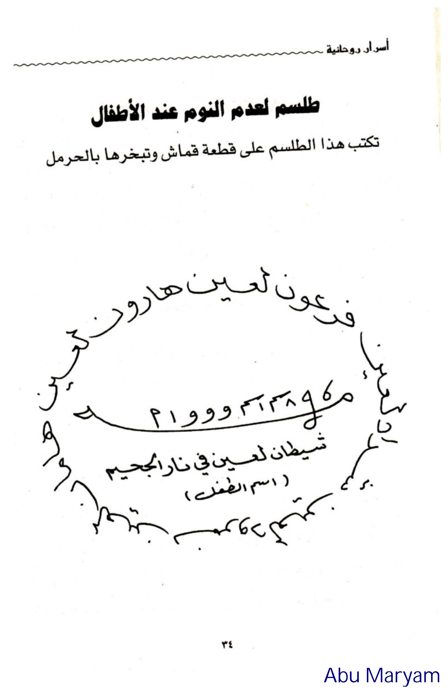
Transkripsi lengkap hlm. 34Halaman cetak 35 — dua topik
إِبْعَادُ الشَّرِّ · تَسَاقُطُ الشَّعْرِ
ARAB · CATATANزَيْتُ اللَّوْزِ الْمُرِّ (١٠٠) غِرَامٍ، زَيْتُ الزَّيْتُونِ (١٢٥) غِرَامًا، زَيْتُ الْخَرْدَلِ (٥٠) غِرَامًا.
Halaman cetak 36–39 — termasuk folio tak terpindai
Halaman 36–37 · belum ada citra
PENANDA GAPHalaman 38 · ثلاثة موضوعات
TRANSKRIPSIHalaman 39 · وَفْقٌ حُرُوفِيٌّ
RAJAHHalaman cetak 40–42 — kolasi lanjutan
Halaman 40 · citra tidak tersedia
GAPPindai bergerak dari folio 39 ke 41; halaman 40 tidak direka.
Status hlm. 40Halaman 41 · رُجُوعُ الْغَائِبِ
ARAB · WAṢLلِلْحُصُولِ عَلَى فُرْصَةِ عَمَلٍ
Halaman 42 · لِعِلَاجِ الْمَرَضِ
تَرْجَمَةٌ · تَنْبِيهٌHalaman cetak 43 — sampel lanjutan
لِعِلَاجِ الْحَسَدِ · أَوْجَاعُ الْأَسْنَانِ
ARAB · KOLASIHalaman cetak 44 — wafaq
طِلَسْمُ جَلْبٍ وَمَحَبَّةٍ
FACSIMILE · وَفْق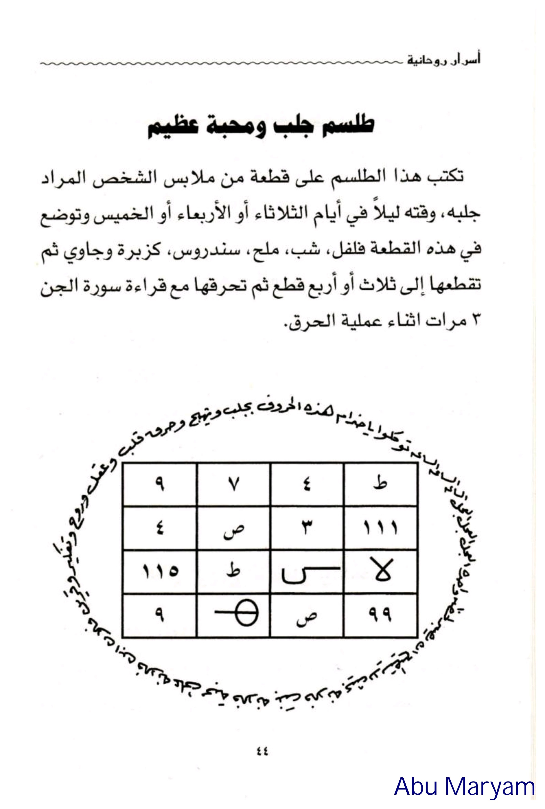
Transkripsi lengkap hlm. 44Halaman cetak 45–46 — sampel
Halaman 45 · خَاتَمُ حِفْظٍ وَوَصْفَةٌ مَذْكُورَةٌ
تَنْبِيهُ سُمِّيَّةٍنَبَاتُ الدَّفْلَةِ · ١ كِغْ · مِلْحٌ خَشِنٌ · ٥ لِتْرَاتٍ
Halaman 46 · صُلْحُ الزَّوْجَيْنِ
تَنْبِيهٌ لِلْعَيْنِثُمَّ يُوضَعُ فِيهِ مَاءُ الْمَطَرِ وَيُغَطَّى لِمُدَّةِ أُسْبُوعٍ...
Halaman cetak 47 — kolasi
آلَامُ الْأَكْتَافِ وَالرَّأْسِ
أَسْمَاءٌ سَامَةٌHalaman cetak 48–50 — sampel dan gap
Halaman 48 · pindai tidak tersedia
GAPFolio 48 tidak ditemukan; tidak disusun teks pengganti.
Status hlm. 48Halaman 49 · طِلَسْمُ الْعِزِّ وَالْجَاهِ
WAFaq · 4×4Halaman 50 · لِطَرْدِ السِّحْرِ وَالْجِنِّ
متابعةHalaman cetak 51 — sampel lanjutan
لَفَكِّ الْقَيْدِ
عَرَبِيٌّ · وَصْلٌHalaman cetak 52–53 — sampel
Halaman 52 · طِلَسْمٌ لِعِلَاجِ الصَّرْعِ
FACSIMILE · TAHQIQ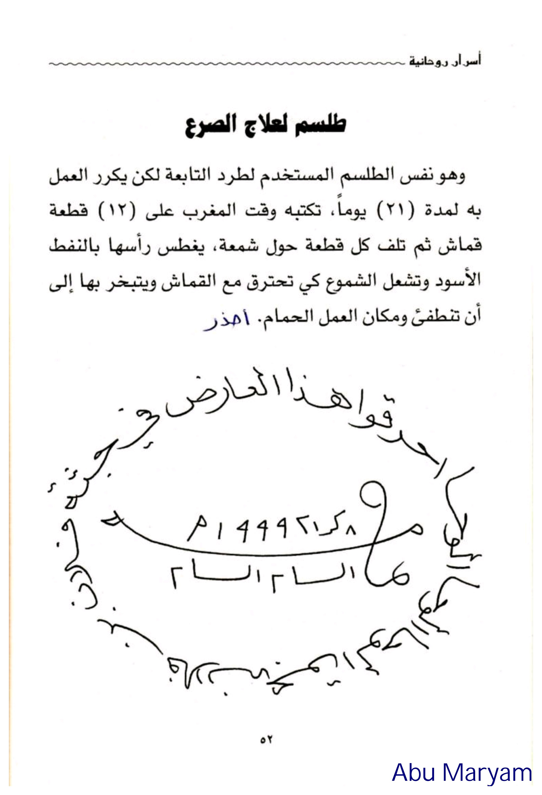
Transkripsi lengkap hlm. 52صفحة 53 · تَحْسِينُ الْحَالِ
تَنْبِيهٌ«بِسْمِ اللهِ الرَّحْمٰنِ الرَّحِيمِ» (٧) مَرَّاتٍ
Halaman cetak 54 — sampel
لِإِزَالَةِ الْعَارِضِ وَالْجِنِّ
آيَاتٌ · كُولَاسِي﴿بَرَاءَةٌ مِنَ اللهِ وَرَسُولِهِ... وَالصَّافَّاتِ صَفًّا...﴾
Halaman cetak 55 — wafaq
طِلَسْمُ الْجَمْعِ بَيْنَ الْأَحِبَّةِ
WAFQ 4×4 · IMAGE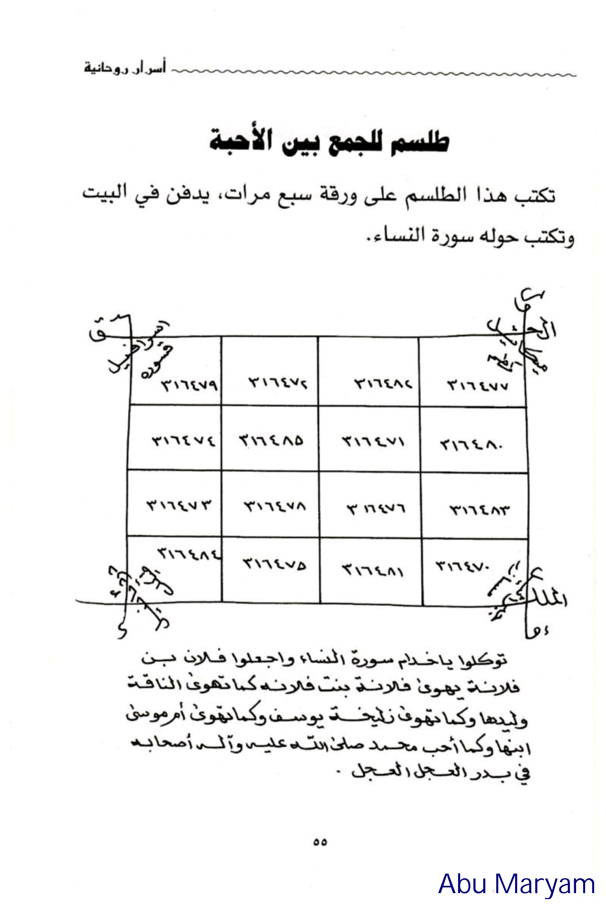
Transkripsi lengkap hlm. 55Halaman cetak 56–57 — gap dan sampel
Halaman 56 · pindai tidak tersedia
GAPFolio 56 tidak ditemukan dalam kumpulan pindai; tidak dibuat teks dugaan.
Status hlm. 56صفحة 57 · تغيير الحال
نَصٌّ · مُتَابَعَةٌلِعِلَاجِ أَوْجَاعِ الْكَتِفِ وَالظَّهْرِ
Halaman cetak 58 — wafaq
طِلَسْمٌ لِلْمَحَبَّةِ
وَفْقٌ ٣×٣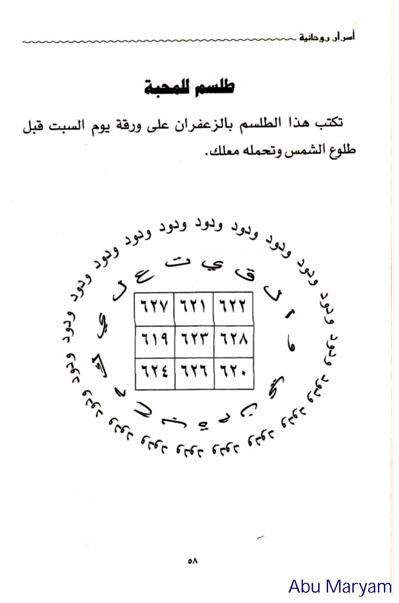
Transkripsi lengkap hlm. 58Halaman cetak 62–63 — sampel dan gap
Halaman 62 · pindai tidak tersedia
GAPصفحة 63 · لِجَلْبِ الْغَائِبِ
نَصٌّ · تَنْبِيهٌ«سُبْحَانَ الَّذِي بِيَدِهِ مَلَكُوتُ كُلِّ شَيْءٍ وَإِلَيْهِ تُرْجَعُونَ».
Halaman cetak 64–65 — sampel/rajah
Halaman 64 · لِلزَّوَاجِ أَوْ لِلْإِنْجَابِ
DOA · KOLASIHalaman 65 · طِلَسْمٌ لِلرِّزْقِ
FACSIMILE · آيَاتٌ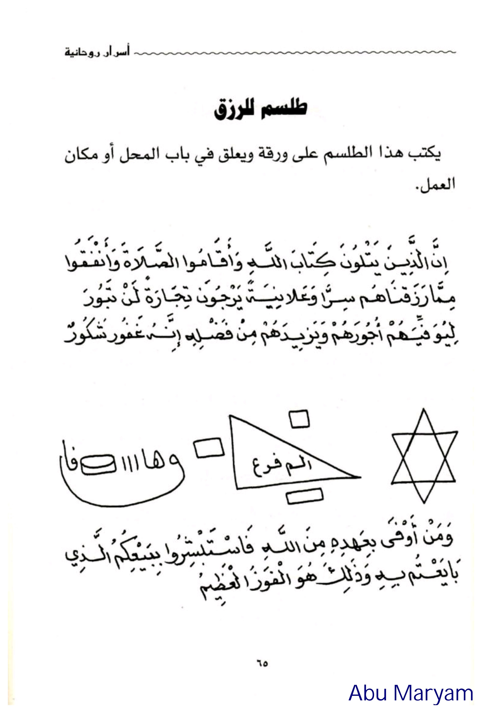
Transkripsi lengkap hlm. 65Halaman cetak 66–67 — rajah dan khatim
Halaman 66 · خَاتَمٌ لِإِزَالَةِ السِّحْرِ
FACSIMILE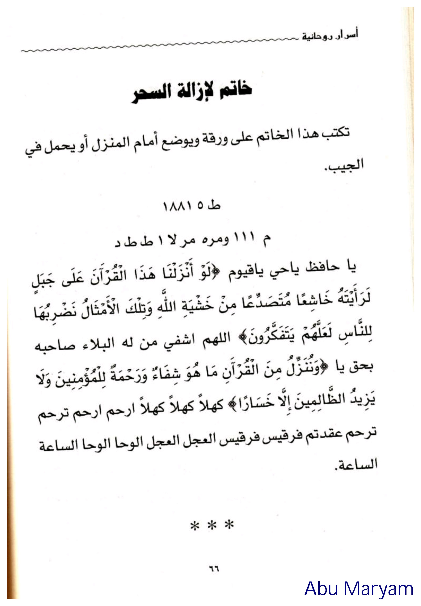
Transkripsi lengkap hlm. 66Halaman 67 · طِلَسْمٌ لِلْمَحَبَّةِ
وَفْقٌ ٣×٣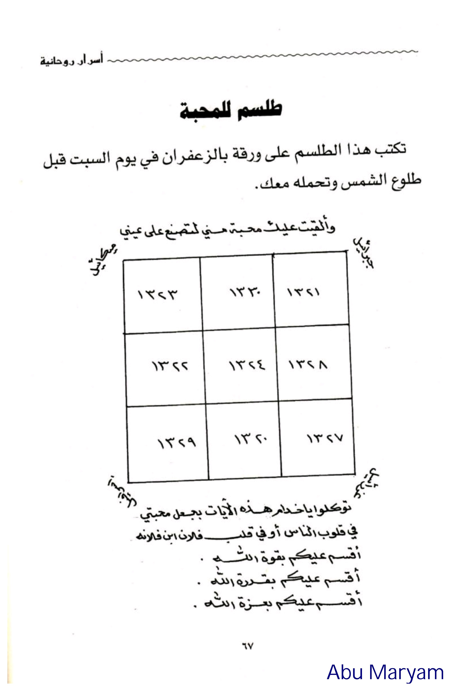
Transkripsi lengkap hlm. 67Halaman cetak 68–71 — sampel dan rajah
Halaman 68 · لِلرِّزْقِ وَعِلَاجُ الْقَرْحَةِ
نَصٌّ · تَنْبِيهٌBuka transkripsi lengkap · folio 68
# Transkripsi dan terjemahan — halaman cetak 68 > Peringatan: halaman ini memuat resep konsumsi untuk ulkus/“qarḥah”. Klaim tidak diverifikasi; isi ini bukan saran medis dan tidak menggantikan evaluasi profesional. ## لِلرِّزْقِ ### Arab bertashkil تُكْتَبُ عَلَى وَرَقَةٍ بِالزَّعْفَرَانِ قَبْلَ صَلَاةِ الظُّهْرِ: «يَا اللهُ يَا اللهُ يَا اللهُ، يَا حَيُّ يَا قَيُّومُ، يَا حَيُّ يَا قَيُّومُ، يَا حَيُّ يَا قَيُّومُ، يَا ذَا الْجَلَالِ وَالْإِكْرَامِ، يَا ذَا الْجَلَالِ وَالْإِكْرَامِ، يَا ذَا الْجَلَالِ وَالْإِكْرَامِ، أَسْأَلُكَ بِاسْمِكَ الْأَعْظَمِ أَنْ تَرْزُقَنِي رِزْقًا حَلَالًا طَيِّبًا بِرَحْمَتِكَ الْوَاسِعَةِ، يَا ذَا الْمَعْرُوفِ الَّذِي لَا يَنْقَطِعُ أَبَدًا وَلَا أُحْصِيهِ عَدَدًا». ## عِلَاجُ الْقَرْحَةِ يُطْبَخُ مُخُّ الْخَرُوفِ طَبْخًا غَيْرَ كَامِلٍ (لِلنِّصْفِ)، بَعْدَهَا يُخْلَطُ مَعَهُ زَيْتُ الزَّيْتُونِ، ثُمَّ يُؤْكَلُ بَعْدَ الِامْتِنَاعِ عَنِ الْأَكْلِ لِمُدَّةِ (٣) سَاعَاتٍ. ثُمَّ يُخْلَطُ اللُّبُّ الْمَوْجُودُ فِي بَطْنِ الرُّمَّانِ مَعَ عَصِيرِ الْمَوْزِ وَيُؤْكَلُ. يُكَرَّرُ هٰذَا الْعَمَلُ سَبْعَةَ أَيَّامٍ. ### Transliterasi waṣl Tuktabu ʿalā waraqatin biz-zaʿfarāni qabla ṣalāti aẓ-ẓuhri: “Yā Allāhu yā Allāhu yā Allāhu, yā ḥayyu yā qayyūmu” (3 marrātin), “yā dhal-jalāli wal-ikrāmi” (3 marrātin), asʾaluka bismika al-aʿẓami an tarzuqanī rizqan ḥalālan ṭayyiban biraḥmatika al-wāsiʿati, yā dhal-maʿrūfi alladhī lā yanqaṭiʿu abadan wa-lā uḥṣīhi ʿadadan. ʿIlāju al-qarḥati: yuṭbakhu mukhu al-kharūfi ṭabkhan ghayra kāmilin (lin-niṣfi), baʿdahā yukhlatu maʿahu zaytu az-zaytūni, thumma yuʾkalu baʿda al-imtināʿi ʿani al-akli limuddati (3) sāʿātin. Thumma yukhlatu al-lubbu al-mawjūdu fī baṭni ar-rummāni maʿa ʿaṣīri al-mawzi wa-yuʾkalu. Yukarraru hādhā al-ʿamalu sabʿata ayyāmin. ### Terjemahan **Untuk rezeki.** Tulislah dengan za‘faran pada kertas sebelum salat Zuhur rangkaian seruan “Ya Allah” tiga kali, “Wahai Yang Maha Hidup, wahai Yang Maha Menegakkan” tiga kali, dan “Wahai Pemilik keagungan dan kemuliaan” tiga kali. Lanjutkan dengan permohonan rezeki halal dan baik melalui rahmat Allah yang luas. **Untuk ulkus/luka.** Sumber menyebut memasak otak domba hingga setengah matang, mencampurkannya dengan minyak zaitun, lalu memakannya setelah tidak makan selama tiga jam. Berikutnya campurkan bagian dalam buah delima dengan jus pisang dan makan; ulangi selama tujuh hari. ### Catatan kolasi/editorial - Folio tercetak **٦٨ (68)**. - Bacaan bahan **مخ الخروف** tampak sebagai “otak domba”; dapat pula memerlukan kolasi lebih tajam pada huruf tengah. Dipertahankan sebagai bacaan visual berkepastian menengah. - Ungkapan **اللب الموجود في بطن الرمان** diterjemahkan literal “bagian dalam/biji yang terdapat di dalam delima”; bukan identifikasi bagian botani pasti. - Takaran makanan tidak dicantumkan. Resep tidak diverifikasi dan tidak direkomendasikan.
Halaman 69 · جِدَارٌ وَرَسْمٌ دَائِرِيٌّ
FACSIMILE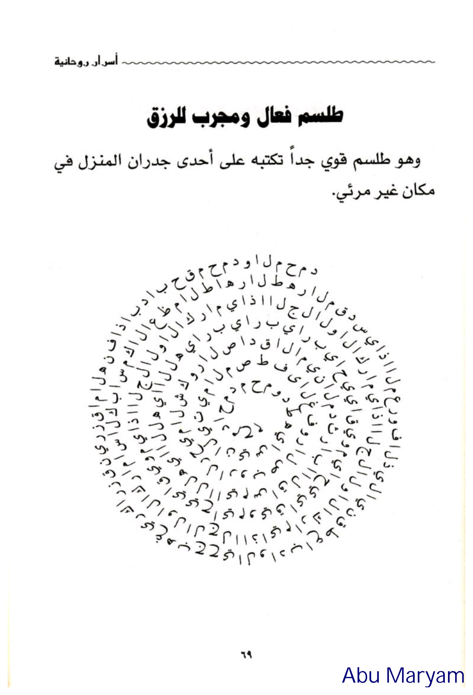
Transkripsi lengkap hlm. 69Buka transkripsi lengkap · folio 69
# Transkripsi dan terjemahan — halaman cetak 69 ## طِلَسْمٌ فَعَّالٌ وَمُجَرَّبٌ لِلرِّزْقِ ### Arab bertashkil وَهُوَ طِلَسْمٌ قَوِيٌّ جِدًّا، تَكْتُبُهُ عَلَى إِحْدَى جُدْرَانِ الْمَنْزِلِ فِي مَكَانٍ غَيْرِ مَرْئِيٍّ. > **الطِّلَسْمُ الْخَطِّيُّ الدَّائِرِيُّ:** [أَحْرُفٌ مُفَرَّقَةٌ مُتَشَابِكَةٌ مُكَوَّنَةٌ فِي أَسْطُرٍ دَائِرِيَّةٍ؛ لَا تُكَوِّنُ كَلِمَاتٍ مُتَّصِلَةً مَقْرُوءَةً بِوُضُوحٍ، فَلَا تُضْبَطُ أَوْ تُفَسَّرُ تَخْمِينًا]. ### Transliterasi waṣl Wa-huwa ṭilasmun qawiyyun jiddan, taktubuhu ʿalā iḥdā judrāni al-manzili fī makānin ghayri marʾiyyin. Aṭ-ṭilasmu al-khaṭṭiyyu ad-dāʾiriyyu: [aḥrufun mufarraqatun mutashābikatun mukawwanatun fī asṭurin dāʾiriyyatin; lā tukawwinu kalimātin muttaṣilatan maqrūʾatan bi-wuḍūḥ, fa-lā tuḍbaṭu aw tufassaru takhmīnan]. ### Terjemahan **Jimat yang diklaim sangat ampuh dan teruji untuk rezeki.** Tulislah pada salah satu dinding rumah, di tempat yang tidak terlihat. Bagian tengah halaman berisi rangkaian huruf lepas yang ditulis melingkar. Huruf-huruf itu tidak disalin sebagai kata-kata karena tidak terbaca utuh dan jelas. ### Catatan kolasi/editorial - Folio tercetak **٦٩ (69)**. - Matan cetak terdiri dari satu kalimat instruksi; seluruh bagian grafis selanjutnya adalah tulisan tangan/rajah berbentuk lingkaran. - Tulisan lingkar tidak ditashkilkan atau ditransliterasikan secara spekulatif. Gunakan facsimile panel untuk melihat bentuk aslinya.
Halaman 70 · جدول سورة النصر
١٠×٩ · PINDAI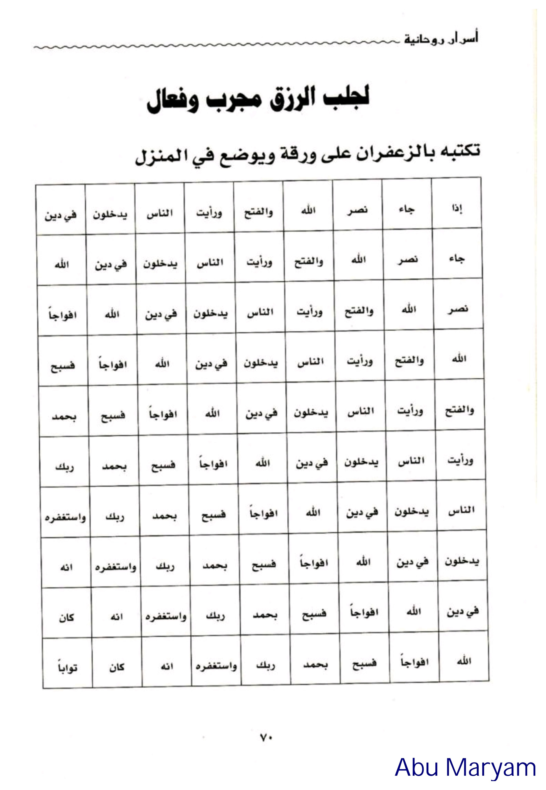
Transkripsi lengkap hlm. 70Buka transkripsi lengkap · folio 70
# Transkripsi dan terjemahan — halaman cetak 70 ## لِجَلْبِ الرِّزْقِ مُجَرَّبٌ وَفَعَّالٌ ### Arab bertashkil يُكْتَبُ بِالزَّعْفَرَانِ عَلَى وَرَقَةٍ وَيُوضَعُ فِي الْمَنْزِلِ. ### الجدول (١٠ صفوف × ٩ خانات؛ كل صف يُقرأ من اليمين إلى اليسار) | الصف | ١ | ٢ | ٣ | ٤ | ٥ | ٦ | ٧ | ٨ | ٩ | |---|---|---|---|---|---|---|---|---|---| | ١ | إِذَا | جَاءَ | نَصْرُ | اللهِ | وَالْفَتْحُ | وَرَأَيْتَ | النَّاسَ | يَدْخُلُونَ | فِي دِينٍ | | ٢ | جَاءَ | نَصْرُ | اللهِ | وَالْفَتْحُ | وَرَأَيْتَ | النَّاسَ | يَدْخُلُونَ | فِي دِينٍ | اللهِ | | ٣ | نَصْرُ | اللهِ | وَالْفَتْحُ | وَرَأَيْتَ | النَّاسَ | يَدْخُلُونَ | فِي دِينٍ | اللهِ | أَفْوَاجًا | | ٤ | اللهُ | وَالْفَتْحُ | وَرَأَيْتَ | النَّاسَ | يَدْخُلُونَ | فِي دِينٍ | اللهِ | أَفْوَاجًا | فَسَبِّحْ | | ٥ | وَالْفَتْحُ | وَرَأَيْتَ | النَّاسَ | يَدْخُلُونَ | فِي دِينٍ | اللهِ | أَفْوَاجًا | فَسَبِّحْ | بِحَمْدِ | | ٦ | وَرَأَيْتَ | النَّاسَ | يَدْخُلُونَ | فِي دِينٍ | اللهِ | أَفْوَاجًا | فَسَبِّحْ | بِحَمْدِ | رَبِّكَ | | ٧ | النَّاسَ | يَدْخُلُونَ | فِي دِينٍ | اللهِ | أَفْوَاجًا | فَسَبِّحْ | بِحَمْدِ | رَبِّكَ | وَاسْتَغْفِرْهُ | | ٨ | يَدْخُلُونَ | فِي دِينٍ | اللهِ | أَفْوَاجًا | فَسَبِّحْ | بِحَمْدِ | رَبِّكَ | وَاسْتَغْفِرْهُ | إِنَّهُ | | ٩ | فِي دِينٍ | اللهِ | أَفْوَاجًا | فَسَبِّحْ | بِحَمْدِ | رَبِّكَ | وَاسْتَغْفِرْهُ | إِنَّهُ | كَانَ | | ١٠ | اللهِ | أَفْوَاجًا | فَسَبِّحْ | بِحَمْدِ | رَبِّكَ | وَاسْتَغْفِرْهُ | إِنَّهُ | كَانَ | تَوَّابًا | ### Transliterasi waṣl Yuktabu biz-zaʿfarāni ʿalā waraqatin wa-yūḍaʿu fil-manzili. Idhā jāʾa naṣru Allāhi wal-fatḥ, wa-raʾayta an-nāsa yadkhulūna fī dīni Allāhi afwājan, fa-sabbiḥ bi-ḥamdi rabbika wastaghfirhu, innahu kāna tawwābā. ### Terjemahan **Untuk memperoleh rezeki, diklaim teruji dan efektif.** Tulislah dengan za‘faran pada selembar kertas dan letakkan di rumah. Tabel mengulang rangkaian kata Surah an-Naṣr secara beruntun. Makna ayatnya: “Apabila pertolongan Allah dan kemenangan telah datang, dan engkau melihat manusia berbondong-bondong masuk agama Allah, maka bertasbihlah dengan memuji Tuhanmu dan mohonlah ampun kepada-Nya. Sesungguhnya Dia Maha Penerima tobat.” ### Catatan kolasi/editorial - Folio tercetak **٧٠ (70)**. - Kisi terdiri dari **10 baris × 9 kolom** (90 sel), dibaca kanan ke kiri. Seluruh entri mengikuti urutan kata yang tercetak; tidak ada sel kosong. - Bacaan adalah rangkaian kata QS an-Naṣr 110:1–3, ditata secara berulang/bergeser dalam kisi. Harakat ditambahkan untuk keterbacaan, bukan bagian dari cetak. - Tak ada jumlah angka sel yang perlu dikonfirmasi editorial.
Halaman 71 · طِلَسْمٌ وَخَاتَمٌ
FACSIMILE · تنبيه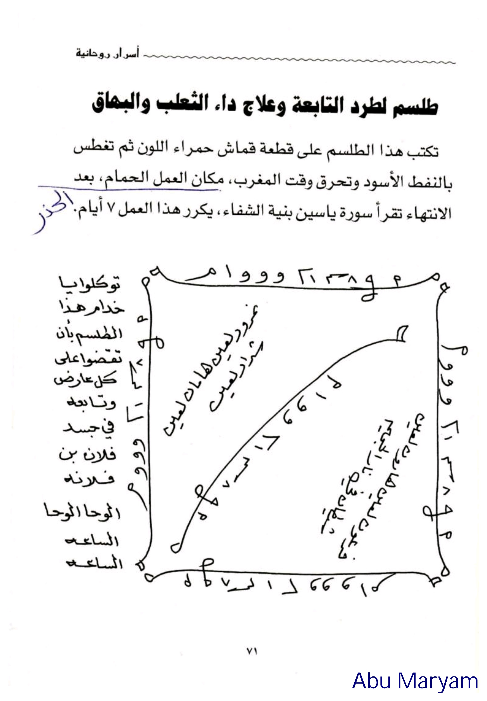
Transkripsi lengkap hlm. 71Buka transkripsi lengkap · folio 71
# Transkripsi dan terjemahan — halaman cetak 71 > Peringatan: instruksi membakar kain yang dicelup minyak dan membaca di kamar mandi berisiko kebakaran/paparan asap. Dokumentasi ini bukan anjuran. ## طِلَسْمٌ لِطَرْدِ التَّابِعَةِ وَعِلَاجِ دَاءِ الثَّعْلَبِ وَالْبَهَقِ ### Arab bertashkil يُكْتَبُ هٰذَا الطِّلَسْمُ عَلَى قِطْعَةِ قُمَاشٍ حَمْرَاءَ اللَّوْنِ، ثُمَّ تُغَطَّسُ بِالنَّفْطِ الْأَسْوَدِ وَتُحْرَقُ وَقْتَ الْمَغْرِبِ، مَكَانَ الْعَمَلِ الْحَمَّامُ. بَعْدَ الْانْتِهَاءِ تُقْرَأُ سُورَةُ يٰس بِنِيَّةِ الشِّفَاءِ. يُكَرَّرُ هٰذَا الْعَمَلُ (٧) أَيَّامٍ. > **الرَّسْمُ الْيَدَوِيُّ:** [خَاتَمٌ مُرَبَّعٌ ذُو خُطُوطٍ وَكَلِمَاتٍ يَدَوِيَّةٍ؛ بَعْضُ عِبَارَاتِهِ تَظْهَرُ مِنْهَا كَلِمَاتٌ مِثْلَ «تَوَكَّلُوا…»، وَلَكِنَّ النَّصَّ الْمُتَّصِلَ غَيْرُ مَقْرُوءٍ بِثِقَةٍ]. ### Transliterasi waṣl Yuktabu hādhā aṭ-ṭilasmu ʿalā qiṭʿati qimāshin ḥamrāʾi al-lawni, thumma tughaṭṭasu bin-nafṭi al-aswadi wa-tuḥraqu waqt al-maghribi; makānu al-ʿamali al-ḥammāmu. Baʿda al-intihāʾi tuqraʾu sūratu Yā-Sīn bi-niyyati ash-shifāʾi. Yukarraru hādhā al-ʿamalu (7) ayyāmin. Ar-rasmu al-yadawiyyu: [khātimun murabbaʿun dhū khuṭūṭin wa-kalimātin yadawiyyatin; baʿḍu ʿibārātihī taẓharu minhā kalimātun mithlu “tawakkalū…”, wa-lākina an-naṣṣa al-muttaṣila ghayru maqrūʾin bi-thiqatin]. ### Terjemahan **Jimat untuk mengusir tābiʿah dan menangani dāʾ al-thaʿlab serta vitiligo.** Tulislah jimat ini pada sepotong kain merah, celupkan ke minyak hitam, lalu bakar pada waktu Magrib; tempat pelaksanaan disebut kamar mandi. Setelah selesai, bacalah Surah Yasin dengan niat kesembuhan. Ulangi selama tujuh hari. Rajah tangan berbentuk persegi mengisi bagian bawah halaman. Beberapa kata terpisah dapat tampak, tetapi bacaan utuh belum dapat dipastikan dan tidak direkonstruksi. ### Catatan kolasi/editorial - Folio tercetak **٧١ (71)**. - Judul memuat **داء الثعلب** dan **البهاق**; diterjemahkan literal sebagai istilah penyakit/kelainan, tanpa diagnosis modern terhadap dāʾ al-thaʿlab. - Frasa **مكان العمل الحمام** tampak dalam teks cetak dan dipertahankan, meski sintaks janggal; tidak direka menjadi instruksi lain. - Rajah dan baris tangan perlu dipertahankan sebagai facsimile; tidak ada angka wafaq kosong yang bisa dipastikan.
Daftar isi akhir kitab — halaman cetak 72–79
Halaman 72 · tidak ada pindai
GAPUrutan gambar melompat dari folio 71 ke daftar isi folio 73; isi folio 72 tidak direka.
Status hlm. 72Buka transkripsi lengkap · folio 72
# Halaman cetak 72 — pindai tidak tersedia ## Status kolasi Tidak ditemukan citra dengan folio cetak ٧٢ (72) pada folder pindai. Urutan file sesudah halaman 71 menampilkan halaman daftar isi bernomor 73. Karena itu, isi halaman 72 tidak direka. **Keterangan:** `[pindai halaman 72 tidak tersedia dalam kumpulan gambar]`.
Halaman 73 · فهرس (١)
DAFTAR ISIPengantar; jimat menghilangkan gangguan; kasih sayang; kekayaan; keturunan; rezeki; utang; Umm al-Ṣibyān; sihir. Rujukan isi 5–15.
Lihat facsimile · folio 73
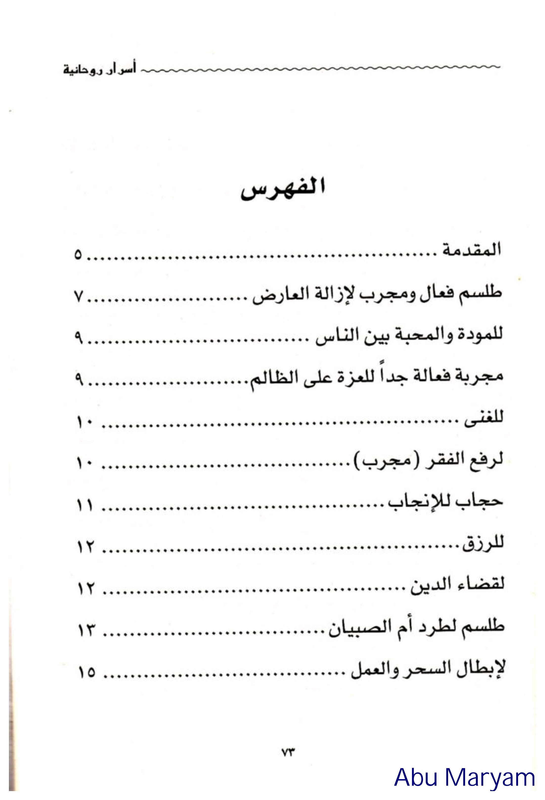
Buka transkripsi lengkap · folio 73
# Transkripsi dan terjemahan — halaman cetak 73 ## الْفِهْرِسُ ### Arab bertashkil الْمُقَدِّمَةُ ........................................ (٥) طِلَسْمٌ فَعَّالٌ وَمُجَرَّبٌ لِإِزَالَةِ الْعَارِضِ ............. (٧) لِلْمَوَدَّةِ وَالْمَحَبَّةِ بَيْنَ النَّاسِ ....................... (٩) مُجَرَّبَةٌ فَعَّالَةٌ جِدًّا لِلْعِزَّةِ عَلَى الظَّالِمِ ........... (٩) لِلْغِنَى ................................................... (١٠) لِرَفْعِ الْفَقْرِ (مُجَرَّبٌ) ................................ (١٠) حِجَابٌ لِلْإِنْجَابِ ....................................... (١١) لِلرِّزْقِ .................................................. (١٢) لِقَضَاءِ الدَّيْنِ ......................................... (١٢) طِلَسْمٌ لِطَرْدِ أُمِّ الصِّبْيَانِ ........................... (١٣) لِإِبْطَالِ السِّحْرِ وَالْعَمَلِ .............................. (١٥) ### Transliterasi waṣl Al-fihrisu. Al-muqaddimatu (5); ṭilasmun faʿʿālun wa-mujarrabun li-izālati al-ʿāriḍi (7); lil-mawaddati wal-maḥabbati bayna an-nāsi (9); mujarrabatun faʿʿālatun jiddan lil-ʿizzati ʿalā aẓ-ẓālimi (9); lil-ghinā (10); li-rafʿi al-faqri (mujarrabun) (10); ḥijābun lil-injābi (11); lir-rizqi (12); li-qaḍāʾi ad-dayni (12); ṭilasmun li-ṭardi ummi aṣ-ṣibyāni (13); li-ibṭāli as-siḥri wal-ʿamali (15). ### Terjemahan **Daftar isi.** Pendahuluan (5); jimat yang diklaim ampuh dan teruji untuk menghilangkan gangguan (7); untuk kasih sayang di antara manusia (9); amalan yang diklaim sangat ampuh untuk memperoleh kemuliaan di hadapan orang zalim (9); untuk kekayaan (10); menghilangkan kemiskinan—diklaim teruji (10); jimat untuk memperoleh keturunan (11); untuk rezeki (12); melunasi utang (12); jimat untuk mengusir Umm al-Ṣibyān (13); membatalkan sihir dan pekerjaan sihir (15). ### Catatan kolasi/editorial - Folio tercetak **٧٣ (73)**; halaman 72 tidak ditemukan pada inventaris pindai. - Nomor halaman dalam daftar isi adalah nomor rujukan isi yang tercetak, bukan urutan pindai. Dipertahankan sebagaimana sumber. - Tashkīl untuk frasa indeks ditambahkan secara editorial. Klaim “ampuh/teruji” adalah redaksi sumber, bukan validasi khasiat.
Halaman 74 · فهرس (٢)
DAFTAR ISIMemuat entri isi halaman 15–25, termasuk penanganan infertilitas, gangguan, dan rezeki.
Lihat facsimile · folio 74
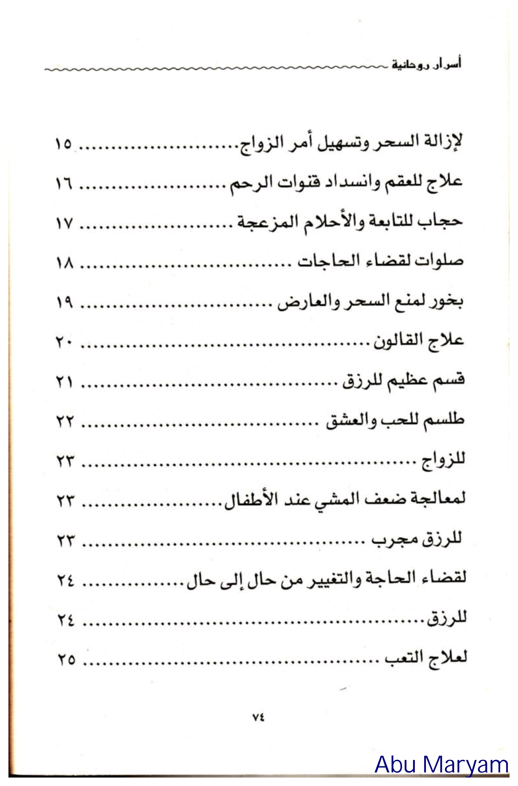
Buka transkripsi lengkap · folio 74
# Transkripsi dan terjemahan — halaman cetak 74 ## الْفِهْرِسُ (تَتِمَّةٌ) ### Arab bertashkil إِزَالَةُ السِّحْرِ وَتَسْهِيلُ أَمْرِ الزَّوَاجِ (١٥) عِلَاجٌ لِلْعُقْمِ وَانْسِدَادِ قَنَوَاتِ الرَّحِمِ (١٦) حِجَابٌ لِلتَّابِعَةِ وَالْأَحْلَامِ الْمُزْعِجَةِ (١٧) صَلَوَاتٌ لِقَضَاءِ الْحَاجَاتِ (١٨) بُخُورٌ لِمَنْعِ السِّحْرِ وَالْعَارِضِ (١٩) عِلَاجُ الْقَالُونِ (٢٠) قِسْمٌ عَظِيمٌ لِلرِّزْقِ (٢١) طِلَسْمٌ لِلْحُبِّ وَالْعِشْقِ (٢٢) لِلزَّوَاجِ (٢٣) لِمُعَالَجَةِ ضَعْفِ الْمَشْيِ عِنْدَ الْأَطْفَالِ (٢٣) لِلرِّزْقِ مُجَرَّبٌ (٢٣) لِقَضَاءِ الْحَاجَةِ وَالتَّغْيِيرِ مِنْ حَالٍ إِلَى حَالٍ (٢٤) لِلرِّزْقِ (٢٤) لِعِلَاجِ التَّعَبِ (٢٥) ### Transliterasi waṣl Al-fihrisu (tatimmatun): izālatu as-siḥri wa-tashīlu amri az-zawāji (15); ʿilājun lil-ʿuqmi wa-insidādi qanawāti ar-raḥimi (16); ḥijābun lit-tābiʿati wal-aḥlāmi al-muzʿijati (17); ṣalawātun li-qaḍāʾi al-ḥājāti (18); bukhūrun limanʿi as-siḥri wal-ʿāriḍi (19); ʿilāju al-qālūni (20); qismun ʿaẓīmun lir-rizqi (21); ṭilasmun lil-ḥubbi wal-ʿishqi (22); liz-zawāji (23); li-muʿālajati ḍaʿfi al-mashyi ʿinda al-aṭfāli (23); lir-rizqi mujarrabun (23); li-qaḍāʾi al-ḥājati wat-taghyīri min ḥālin ilā ḥālin (24); lir-rizqi (24); li-ʿilāji at-taʿabi (25). ### Terjemahan Daftar isi halaman ini mencantumkan: menghilangkan sihir dan memudahkan urusan pernikahan (15); infertilitas dan sumbatan saluran rahim (16); jimat untuk tābiʿah dan mimpi yang mengganggu (17); selawat untuk memenuhi kebutuhan (18); dupa untuk mencegah sihir/gangguan (19); “pengobatan al-qālūn” (20; istilah tidak teridentifikasi pasti); bagian/ritual besar untuk rezeki (21); jimat cinta dan asmara (22); pernikahan (23); gangguan berjalan pada anak-anak (23); rezeki—diklaim teruji (23); pemenuhan hajat dan perubahan keadaan (24); rezeki (24); dan penanganan kelelahan (25). ### Catatan kolasi/editorial - Folio tercetak **٧٤ (74)**; ini halaman daftar isi, bukan halaman isi utama. - Judul cetak **علاج القانون** ditranskripsikan sesuai tampilan; daftar isi tidak menyelesaikan ketidakpastian istilah yang juga muncul di isi. - Nomor dalam kurung adalah rujukan halaman isi yang dicetak. Tidak diubah mengikuti nomor berkas digital.
Halaman 75 · فهرس (٣)
DAFTAR ISIMemuat entri isi halaman 25–34; beberapa judul berlanjut ke halaman berikutnya.
Lihat facsimile · folio 75
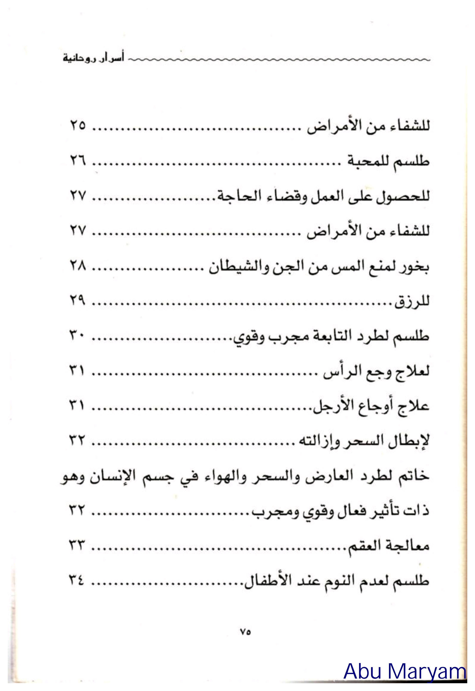
Buka transkripsi lengkap · folio 75
# Transkripsi dan terjemahan — halaman cetak 75 ## الْفِهْرِسُ (تَتِمَّةٌ) ### Arab bertashkil لِلشِّفَاءِ مِنَ الْأَمْرَاضِ (٢٥) طِلَسْمٌ لِلْمَحَبَّةِ (٢٦) لِلْحُصُولِ عَلَى الْعَمَلِ وَقَضَاءِ الْحَاجَةِ (٢٧) لِلشِّفَاءِ مِنَ الْأَمْرَاضِ (٢٧) بُخُورٌ لِمَنْعِ الْمَسِّ مِنَ الْجِنِّ وَالشَّيْطَانِ (٢٨) لِلرِّزْقِ (٢٩) طِلَسْمٌ لِطَرْدِ التَّابِعَةِ مُجَرَّبٌ وَقَوِيٌّ (٣٠) لِعِلَاجِ وَجَعِ الرَّأْسِ (٣١) عِلَاجُ أَوْجَاعِ الْأَرْجُلِ (٣١) لِإِبْطَالِ السِّحْرِ وَإِزَالَتِهِ (٣٢) خَاتَمٌ لِطَرْدِ الْعَارِضِ وَالسِّحْرِ وَالْهَوَاءِ فِي جِسْمِ الْإِنْسَانِ، وَهُوَ ذُو تَأْثِيرٍ فَعَّالٍ وَقَوِيٍّ وَمُجَرَّبٍ (٣٢) مُعَالَجَةُ الْعُقْمِ (٣٣) طِلَسْمٌ لِعَدَمِ النَّوْمِ عِنْدَ الْأَطْفَالِ (٣٤) ### Transliterasi waṣl Al-fihrisu (tatimmatun): lish-shifāʾi mina al-amrāḍi (25); ṭilasmun lil-maḥabbati (26); lil-ḥuṣūli ʿalā al-ʿamali wa-qaḍāʾi al-ḥājati (27); lish-shifāʾi mina al-amrāḍi (27); bukhūrun limanʿi al-massi mina al-jinni wash-shayṭāni (28); lir-rizqi (29); ṭilasmun li-ṭardi at-tābiʿati mujarrabun wa-qawiyyun (30); li-ʿilāji wajʿi ar-raʾsi (31); ʿilāju awjāʿi al-arjuli (31); li-ibṭāli as-siḥri wa-izālatihi (32); khātimun li-ṭardi al-ʿāriḍi was-siḥri wal-hawāʾi fī jismi al-insāni (32); muʿājalatu al-ʿuqmi (33); ṭilasmun li-ʿadami an-nawmi ʿinda al-aṭfāli (34). ### Terjemahan Daftar isi melanjutkan: kesembuhan dari penyakit (25); jimat kasih sayang (26); memperoleh pekerjaan dan pemenuhan hajat (27); kesembuhan dari penyakit (27); dupa untuk mencegah gangguan jin dan setan (28); rezeki (29); jimat untuk mengusir tābiʿah—diklaim teruji dan kuat (30); sakit kepala (31); sakit kaki (31); membatalkan dan menghilangkan sihir (32); khatim untuk mengusir gangguan/sihir dan “al-hawāʾ” di tubuh (32); infertilitas (33); serta jimat untuk kesulitan tidur pada anak-anak (34). ### Catatan kolasi/editorial - Folio tercetak **٧٥ (75)**; halaman ini adalah daftar isi. - Judul **الهواء** dipertahankan literal karena maknanya tidak jelas pada konteks indeks. - Nomor rujukan diteruskan persis sebagaimana cetakan.
Halaman 76 · فهرس (٤)
DAFTAR ISIMemuat daftar entri isi halaman 35–42.
Lihat facsimile · folio 76
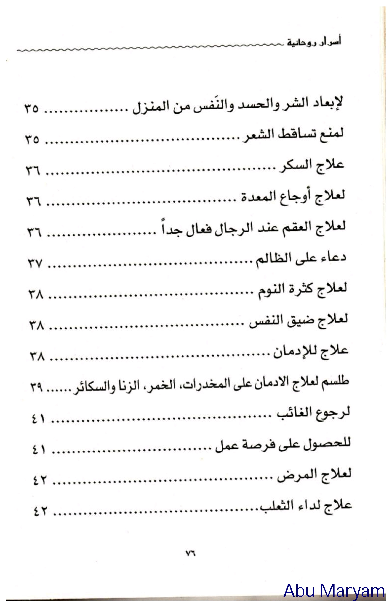
Buka transkripsi lengkap · folio 76
# Transkripsi dan terjemahan — halaman cetak 76 ## الْفِهْرِسُ (تَتِمَّةٌ) ### Arab bertashkil لِإِبْعَادِ الشَّرِّ وَالْحَسَدِ وَالنَّفْسِ مِنَ الْمَنْزِلِ (٣٥) لِمَنْعِ تَسَاقُطِ الشَّعْرِ (٣٥) عِلَاجُ السُّكَّرِ (٣٦) لِعِلَاجِ أَوْجَاعِ الْأَرْجُلِ (٣٦) لِعِلَاجِ الْعُقْمِ عِنْدَ الرِّجَالِ فَعَّالٌ جِدًّا (٣٦) دُعَاءٌ عَلَى الظَّالِمِ (٣٧) لِعِلَاجِ كَثْرَةِ النَّوْمِ (٣٨) لِعِلَاجِ ضِيقِ النَّفَسِ (٣٨) عِلَاجٌ لِلْإِدْمَانِ (٣٨) طِلَسْمٌ لِعِلَاجِ الْإِدْمَانِ عَلَى الْمُخَدِّرَاتِ وَالْخَمْرِ وَالزِّنَا وَالْقِمَارِ (٣٩) لِرُجُوعِ الْغَائِبِ (٤١) لِلْحُصُولِ عَلَى فُرْصَةِ عَمَلٍ (٤١) لِعِلَاجِ الْمَرَضِ (٤٢) عِلَاجٌ لِدَاءِ الثَّعْلَبِ (٤٢) ### Transliterasi waṣl Al-fihrisu (tatimmatun): li-ibʿādi ash-sharri wal-ḥasadi wan-nafsi mina al-manzili (35); li-manʿi tasāquṭi ash-shaʿri (35); ʿilāju as-sukkari (36); li-ʿilāji awjāʿi al-arjuli (36); li-ʿilāji al-ʿuqmi ʿinda ar-rijāli faʿʿālun jiddan (36); duʿāʾun ʿalā aẓ-ẓālima (37); li-ʿilāji kathrati an-nawmi (38); li-ʿilāji ḍīqi an-nafasi (38); ʿilājun lil-idmāni (38); ṭilasmun li-ʿilāji al-idmāni ʿalā al-mukhaddirāti wal-khamri waz-zinā wal-qimāri (39); li-rujūʿi al-ghāʾibi (41); lil-ḥuṣūli ʿalā furṣati ʿamalin (41); li-ʿilāji al-maraḍi (42); ʿilājun li-dāʾi ath-thaʿlabi (42). ### Terjemahan Daftar isi melanjutkan dengan: menjauhkan keburukan, hasad, dan “nafs” dari rumah (35); mencegah rambut rontok (35); diabetes (36); nyeri kaki (36); infertilitas pada laki-laki—diklaim sangat ampuh (36); doa terhadap orang zalim (37); terlalu banyak tidur (38); sesak napas (38); kecanduan (38); jimat untuk kecanduan narkotika, alkohol, zina, dan perjudian (39); kembalinya orang yang pergi/hilang (41); memperoleh kesempatan kerja (41); penanganan penyakit (42); dan dāʾ al-thaʿlab (42). ### Catatan kolasi/editorial - Folio tercetak **٧٦ (76)**; daftar isi. - Entri **علاج السكر** berarti penanganan “gula/diabetes” dalam terminologi modern yang mungkin dimaksud; diterjemahkan sebagai diabetes dengan catatan bahwa indeks tidak memberi definisi medis. - Entri **دعاء على الظالم** secara literal “doa terhadap orang zalim”; tidak dilembutkan menjadi doa untuk orang zalim. - Rujukan halaman dicatat seperti cetakan; halaman 40 tidak tersedia dalam pindai.
Halaman 77 · فهرس (٥)
DAFTAR ISIMemuat daftar entri isi halaman 43–53.
Lihat facsimile · folio 77
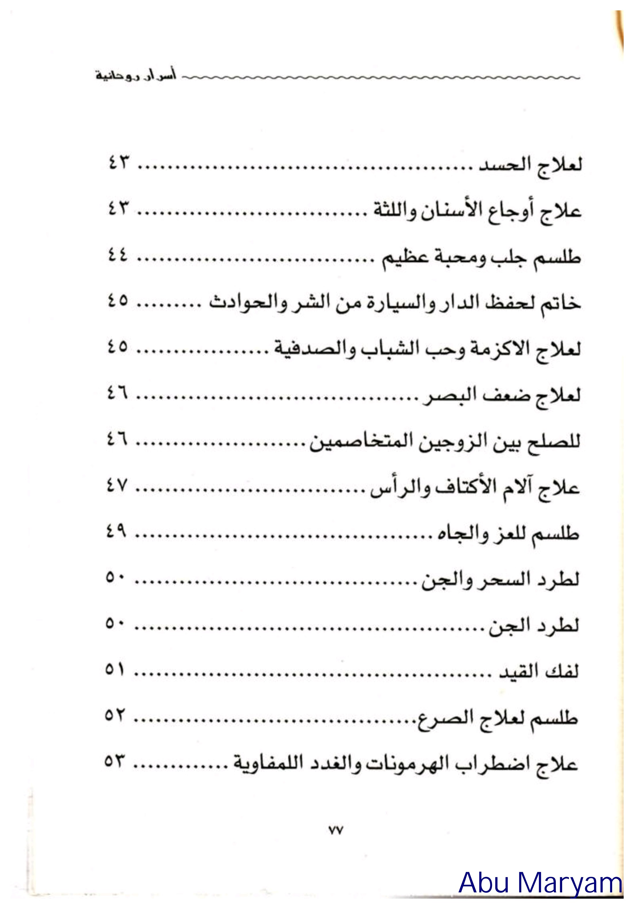
Buka transkripsi lengkap · folio 77
# Transkripsi dan terjemahan — halaman cetak 77 ## الْفِهْرِسُ (تَتِمَّةٌ) ### Arab bertashkil لِعِلَاجِ الْحَسَدِ (٤٣) عِلَاجُ أَوْجَاعِ الْأَسْنَانِ وَاللِّثَةِ (٤٣) طِلَسْمُ جَلْبٍ وَمَحَبَّةٍ عَظِيمٍ (٤٤) خَاتَمٌ لِحِفْظِ الدَّارِ وَالسَّيَّارَةِ مِنَ الشَّرِّ وَالْحَوَادِثِ (٤٥) لِعِلَاجِ الْأَكْزِيمَا وَحَبِّ الشَّبَابِ وَالصَّدَفِيَّةِ (٤٥) لِعِلَاجِ ضَعْفِ الْبَصَرِ (٤٦) لِلصُّلْحِ بَيْنَ الزَّوْجَيْنِ الْمُتَخَاصِمَيْنِ (٤٦) عِلَاجُ آلَامِ الْأَكْتَافِ وَالرَّأْسِ (٤٧) طِلَسْمٌ لِلْعِزِّ وَالْجَاهِ (٤٩) لِطَرْدِ السِّحْرِ وَالْجِنِّ (٥٠) لِطَرْدِ الْجِنِّ (٥٠) لَفَكِّ الْقَيْدِ (٥١) طِلَسْمٌ لِعِلَاجِ الصَّرْعِ (٥٢) عِلَاجُ اضْطِرَابِ الْهُرْمُونَاتِ وَالْغُدَدِ اللِّمْفَاوِيَّةِ (٥٣) ### Transliterasi waṣl Al-fihrisu (tatimmatun): li-ʿilāji al-ḥasadi (43); ʿilāju awjāʿi al-asnāni wal-lithati (43); ṭilasmu jalbin wa-maḥabbatin ʿaẓīmin (44); khātimun li-ḥifẓi ad-dāri was-sayyārati mina ash-sharri wal-ḥawādithi (45); li-ʿilāji al-akzīmā wa-ḥabbi ash-shabābi wa-aṣ-ṣadafiyyati (45); li-ʿilāji ḍaʿfi al-baṣari (46); liṣ-ṣulḥi bayna az-zawjayni al-mutakhāṣimayni (46); ʿilāju ālāmi al-aktāfi war-raʾsi (47); ṭilasmun lil-ʿizzi wal-jāhi (49); li-ṭardi as-siḥri wal-jinni (50); li-ṭardi al-jinni (50); li-fakki al-qaydi (51); ṭilasmun li-ʿilāji aṣ-ṣarʿi (52); ʿilāju iḍṭirābi al-hurmūnāti wal-ghudadi al-limfāwiyyati (53). ### Terjemahan Daftar isi memuat: hasad (43); sakit gigi dan gusi (43); jimat untuk menarik dan menumbuhkan kasih sayang (44); khatim untuk melindungi rumah dan mobil dari keburukan/kecelakaan (45); eksim, jerawat, psoriasis (45); kelemahan penglihatan (46); mendamaikan pasangan yang bertengkar (46); nyeri bahu dan kepala (47); kemuliaan/kedudukan (49); mengusir sihir dan jin (50); mengusir jin (50); membuka ikatan (51); jimat untuk epilepsi/kejang (52); serta gangguan hormon dan kelenjar limfatik (53). ### Catatan kolasi/editorial - Folio tercetak **٧٧ (77)**; halaman daftar isi. - Penomoran menunjuk folio isi; sejumlah halaman perantara tidak tersedia dalam pindai yang ada. Daftar isi tetap disalin tanpa mengisi gap. - Istilah medis merupakan judul sumber dan tidak dinilai sebagai diagnosis.
Halaman 78 · فهرس (٦)
DAFTAR ISIMemuat daftar entri isi halaman 53–62.
Lihat facsimile · folio 78
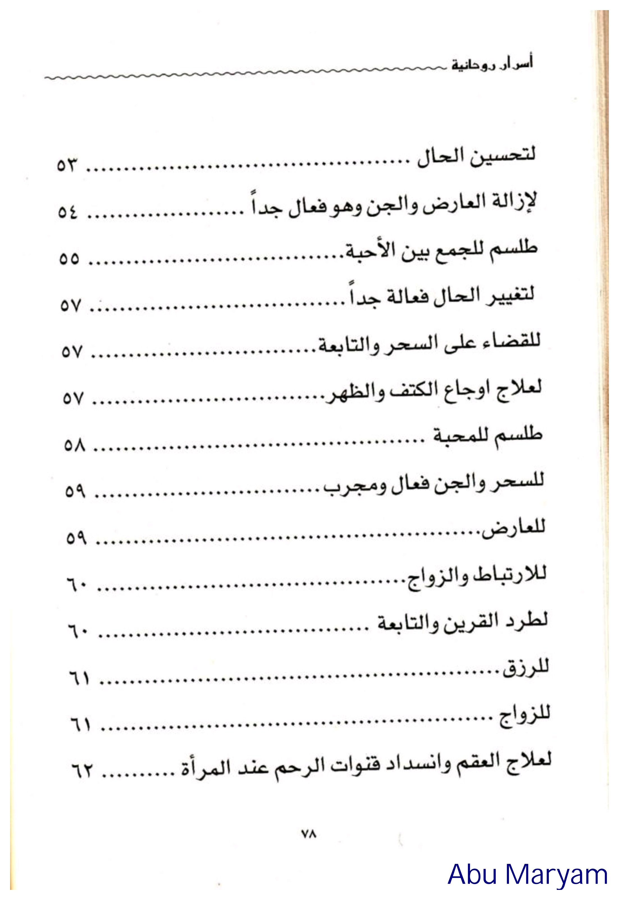
Buka transkripsi lengkap · folio 78
# Transkripsi dan terjemahan — halaman cetak 78 ## الْفِهْرِسُ (تَتِمَّةٌ) ### Arab bertashkil لِتَحْسِينِ الْحَالِ (٥٣) لِإِزَالَةِ الْعَارِضِ وَالْجِنِّ، وَهُوَ فَعَّالٌ جِدًّا (٥٤) طِلَسْمٌ لِلْجَمْعِ بَيْنَ الْأَحِبَّةِ (٥٥) لِتَغْيِيرِ الْحَالِ فَعَّالَةٌ جِدًّا (٥٧) لِلْقَضَاءِ عَلَى السِّحْرِ وَالتَّابِعَةِ (٥٧) لِعِلَاجِ أَوْجَاعِ الْكَتِفِ وَالظَّهْرِ (٥٧) طِلَسْمٌ لِلْمَحَبَّةِ (٥٨) لِلسِّحْرِ وَالْجِنِّ فَعَّالٌ وَمُجَرَّبٌ (٥٩) لِلْعَارِضِ (٥٩) لِلِارْتِبَاطِ وَالزَّوَاجِ (٦٠) لِطَرْدِ الْقَرِينِ وَالتَّابِعَةِ (٦٠) لِلرِّزْقِ (٦١) لِلزَّوَاجِ (٦١) لِعِلَاجِ الْعُقْمِ وَانْسِدَادِ قَنَوَاتِ الرَّحِمِ عِنْدَ الْمَرْأَةِ (٦٢) ### Transliterasi waṣl Al-fihrisu (tatimmatun): li-taḥsīni al-ḥāli (53); li-izālati al-ʿāriḍi wal-jinni, wa-huwa faʿʿālun jiddan (54); ṭilasmun lil-jamʿi bayna al-aḥibbati (55); li-taghyīri al-ḥāli faʿʿālatun jiddan (57); lil-qaḍāʾi ʿalā as-siḥri wat-tābiʿati (57); li-ʿilāji awjāʿi al-katifi waẓ-ẓahri (57); ṭilasmun lil-maḥabbati (58); lis-siḥri wal-jinni faʿʿālun wa-mujarrabun (59); lil-ʿāriḍi (59); lil-irtibāṭi waz-zawāji (60); li-ṭardi al-qarīni wat-tābiʿati (60); lir-rizqi (61); liz-zawāji (61); li-ʿilāji al-ʿuqmi wa-insidādi qanawāti ar-raḥimi ʿinda al-marʾati (62). ### Terjemahan Daftar isi melanjutkan dengan: memperbaiki keadaan (53); menghilangkan gangguan dan jin—diklaim sangat ampuh (54); mempertemukan orang-orang yang saling mencintai (55); mengubah keadaan—diklaim sangat ampuh (57); menyingkirkan sihir dan tābiʿah (57); nyeri bahu dan punggung (57); jimat kasih sayang (58); sihir dan jin—diklaim efektif/teruji (59); gangguan (59); ikatan/pernikahan (60); mengusir qarīn dan tābiʿah (60); rezeki (61); pernikahan (61); infertilitas dan sumbatan saluran rahim pada perempuan (62). ### Catatan kolasi/editorial - Folio tercetak **٧٨ (78)**; daftar isi. - Entri nomor 62 merujuk folio yang tidak tersedia sebagai pindai tersendiri dalam kumpulan ini. - Klaim “efektif/ampuh” dicatat sebagai redaksi indeks, bukan verifikasi khasiat.
Halaman 79 · آخر الفهرس
الفوليُو الأخيرDaftar isi berakhir dengan entri halaman 63–71. Folio ini merupakan halaman bernomor terakhir yang tampak pada pindai; citra sesudahnya adalah sampul belakang.
Lihat facsimile · folio 79
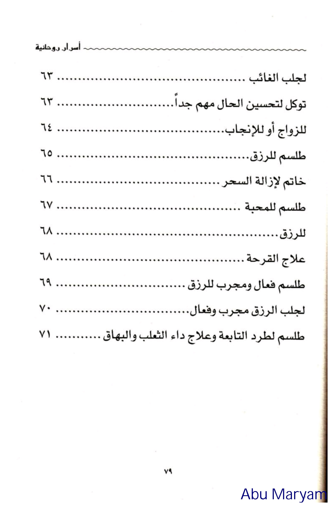
Buka transkripsi lengkap · folio 79
# Transkripsi dan terjemahan — halaman cetak 79 ## الْفِهْرِسُ (تَتِمَّةٌ وَآخِرُهُ) ### Arab bertashكيل لِجَلْبِ الْغَائِبِ (٦٣) تَوَكُّلٌ لِتَحْسِينِ الْحَالِ مُهِمٌّ جِدًّا (٦٣) لِلزَّوَاجِ أَوْ لِلْإِنْجَابِ (٦٤) طِلَسْمٌ لِلرِّزْقِ (٦٥) خَاتَمٌ لِإِزَالَةِ السِّحْرِ (٦٦) طِلَسْمٌ لِلْمَحَبَّةِ (٦٧) لِلرِّزْقِ (٦٨) عِلَاجُ الْقَرْحَةِ (٦٨) طِلَسْمٌ فَعَّالٌ وَمُجَرَّبٌ لِلرِّزْقِ (٦٩) لِجَلْبِ الرِّزْقِ مُجَرَّبٌ وَفَعَّالٌ (٧٠) طِلَسْمٌ لِطَرْدِ التَّابِعَةِ وَعِلَاجِ دَاءِ الثَّعْلَبِ وَالْبَهَقِ (٧١) ### Transliterasi waṣl Al-fihrisu (tatimmatun wa-ākhiruhu): li-jalbi al-ghāʾibi (63); tawakkulun li-taḥsīni al-ḥāli muhimm(un) jiddan (63); liz-zawāji aw lil-injābi (64); ṭilasmun lir-rizqi (65); khātimun li-izālati as-siḥri (66); ṭilasmun lil-maḥabbati (67); lir-rizqi (68); ʿilāju al-qarḥati (68); ṭilasmun faʿʿālun wa-mujarrabun lir-rizqi (69); li-jalbi ar-rizqi mujarrabun wa-faʿʿālun (70); ṭilasmun li-ṭardi at-tābiʿati wa-ʿilāji dāʾi ath-thaʿlabi wal-bahaqi (71). ### Terjemahan Daftar isi terakhir memuat: mendatangkan orang yang pergi/hilang (63); tawakkal untuk memperbaiki keadaan—dianggap sangat penting (63); pernikahan atau memperoleh keturunan (64); jimat rezeki (65); khatim untuk menghilangkan sihir (66); jimat kasih sayang (67); rezeki (68); penanganan ulkus (68); jimat rezeki—diklaim ampuh dan teruji (69); mendatangkan rezeki—diklaim teruji dan efektif (70); jimat untuk mengusir tābiʿah dan menangani dāʾ al-thaʿlab serta vitiligo (71). ### Catatan kolasi/editorial - Folio tercetak **٧٩ (79)**; daftar isi ini adalah halaman bernomor terakhir yang terlihat dalam pindai. - Citra berikutnya adalah sampul belakang, bukan folio isi bernomor. Halaman 72 tidak tampak dalam kumpulan pindai. - Kata **البهاق** dibaca *al-bahaq* (vitiligo/leukoderma) secara leksikal; bukan diagnosis pasien tertentu. - Nomor isi dikutip apa adanya; klaim khasiat dalam judul tetap merupakan redaksi indeks.
Sampul belakang · tanpa folio
FACSIMILE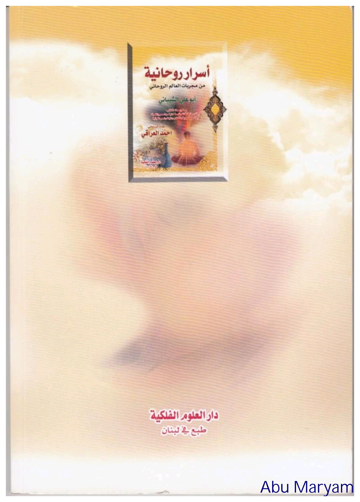